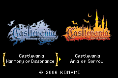
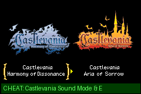

Castlevania Double Pack (USA)
SRAM 256K Save Format Spec gbakit Built-In Debug Menu Patch 🎮 Button Cheat 💾 MultiBoot 🎮 4P Link
Cartridge Identity
- Game Code
BXKE(FamilyBXK)- Header Title
CV 2 PACK- Maker / Revision
A4/ rev0- ROM Size
- 16.0 MiB (16,777,216 B)
- Save Media
SRAM 256K- SHA-256
0471c34b0e30321ec4f6a6711a6f5bf5ac3d088320141918a0ca213d59e29af8- Engine / SDK Group
comm-048(3 families)
Screenshots

Debug Menu Re-Enablement Patch (.ips)
Download BXKE-debug.ips (24 B IPS / 6 B delta)
- Hook Mechanism
embedded_rom_jump_table_override· Redirect Double Pack boot entry at 0x0001c8 to Aria of Sorrow (0x08800000) and swap Aria jump-table slot 0 at 0x800464 (0x088004b8 -> 0x0880051e) to boot directly into Aria of Sorrow Test/Boss-Rush stage mode (0x088365b0)- IPS SHA-256
7d5ee29219acc6763851b1de4590acc392344e1990441c8f025253c8ecb79a3d
gbakit patch apply BXKE-debug.ips original.gba patched-debug.gba

Verified Button-Combo Cheat
Zero-patch retail controller cheat (Wave 1): 4-way counterfactually verified in headless
libmgba. See all verified titles in the Button-Combo Cheats Catalog.
- Effect
- Castlevania Sound Mode & Extra Game Mode Unlock
- Button Sequence
UP, UP, DOWN, DOWN, LEFT, RIGHT, LEFT, RIGHT, B, A- Verification Verdict
- Visual + RAM Unique Reaction
- Target RAM Address
0x02000040- Timing Protocol
boot=360f,hold=6f,release=6f,settle=60f- Activation Indicator
- Sound chime and Castlevania sound mode / extra mode unlocked in RAM & VRAM
gbakit cheat verify BXKE

Link Cable & Multiplayer Communications
This title contains detected communication capabilities: 💾 MultiBoot 🎮 4P Link.
Detailed protocol specifications, SIO registers, Joybus commands, and MultiBoot sequences are documented in the Link & Multiplayer Reference.
- Multi-Player SIO (4P)
- 16-bit ring network · SIOCNT (
0x04000128) literals:0x8d7970,0x8d799c,0x8d7bfc· SIODATA32/SIOMULTI0 (0x04000120) literals:0x8d7d10,0xdeebd8 - Single-Cart MultiBoot
- Single-Cartridge MultiBoot (Download Play) client/server handler · Thumb SWI 0x25 (
0xDF25):0x23d394,0x2764f2,0x2a303e,0x41f73a
Battery Save Format Specification
Open Full Save Format SpecDownload save-format.json
- Specification Coverage
- 4 mapped fields · 0 verified checksum(s) · Confidence: HIGH
- gbakit Built-In Support
- Built-in (BXKE)
gbakit save verify BXKE save.sav
gbakit save decode BXKE save.sav
gbakit save fix BXKE damaged.sav -o repaired.savObserved Battery Save Layout
- Fill Byte & Active Size
0xFFfill · 16,384–16,384 / 32,768 B active (entropy 0.01 bits/B)- Active Offset Ranges
0x0–0x3FFF(1 total)- ASCII Magic / Headers
CASTLEVANIA1.00- Observed Variable Regions
- 0 bytes across 0 spans: None
- Candidate Checksum/Counter Spans
- None
ROM Assets, Compression & Audio
- BIOS Compression
- LZ77 (
0x10): 1,170 streams · RLE (0x30): 0 streams - ROM Pointer Tables
- 125 tables (3 pointing to validated compressed streams)
- SDK Backup Tags
SRAM_F_V102,SRAM_F_V102
Text, Fonts & Scene Data
- Primary Text Encoding
- Plain ASCII (uncompressed) (
3,610ASCII strings ·2LZ77 ASCII blocks) - Font & VWF Indicators
- VWF Width Table 1bpp Font · BIOS SWIs: BitUnPack
0x10:6· LZ770x11/12:4· Huffman0x13:0· RLE0x14/15:2 - Scene & Packaging
60ROM pointer tables (≥32 entries,6≥200) ·8relativeu32TOCs ·178OAM metasprite hits
Hardware MMIO Subsystems
save_bus_sram_flash0x8080de4,0x8080e74
Regional Variants & Revisions (Family BXK)
- Castlevania Double Pack (Europe) (En,Fr,De) (
BXKP, 16 MiB)